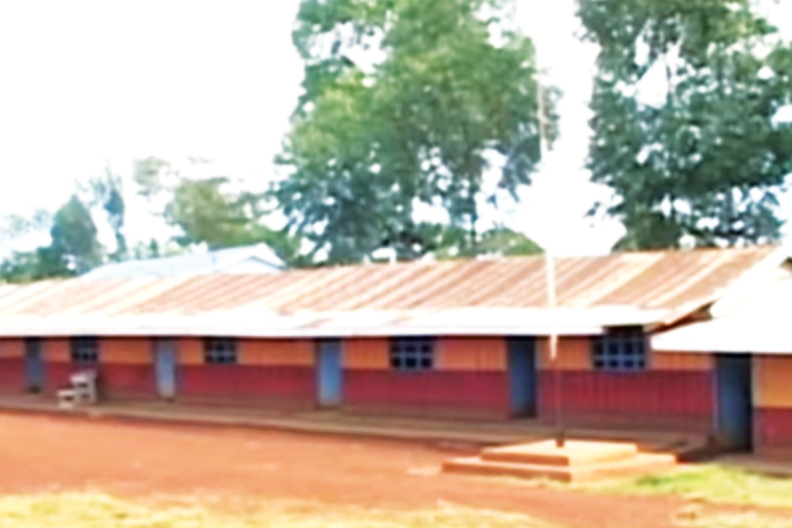
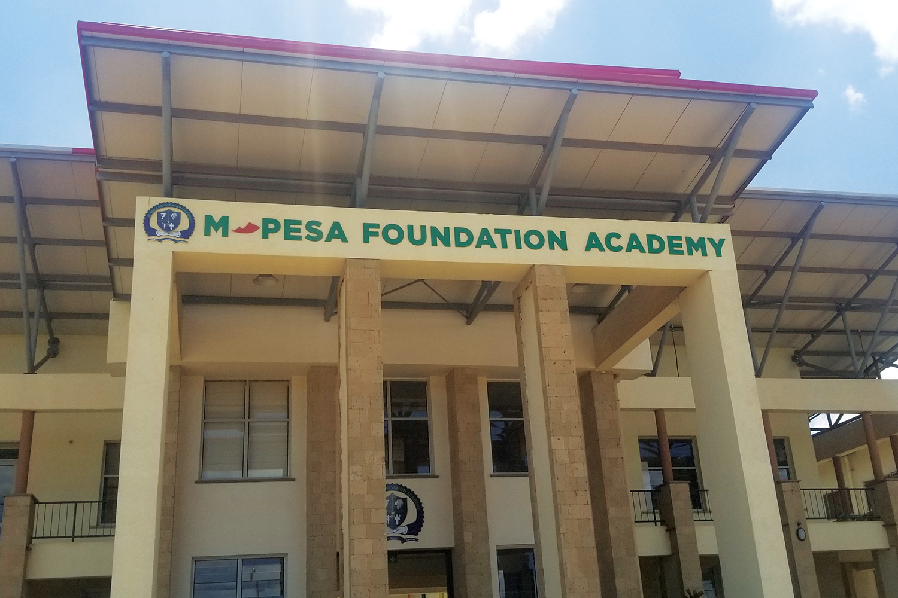

My three names are Duncan Kipkoech Kigen. I am a male student at Stony Brook School, going through my final years of high school studies. I am a self disciplined competitor who loves to be on at the top of any field I engage in. I am passionate about medicine and technology, and in future I see myself working in improving the health technology in my country and beyond. I am born again Christian who follows Jesus Christ teachings to the fullest of my ability. Also I am a jovial person, I love jokes a lot. My main weakness is that I can easily be swayed by someone.
Education Background
Pre School at Olenguruone and Kapkoros Junior Academy ; 2009-2011
Primary School at Sergutiet Primary School; 2012
Primary School at Royal Top Mark Academy ; 2013-2019
Junior High School at Mpesa Foundation Academy ; 2020-2022
Senior High School at Stony Brook School ; 2022-2024


Personal Achievements
Top Male Performer Bomet County - 422/500 marks
Second Best Performer International Baccalaureate Middle Years Program - 47/56 marks